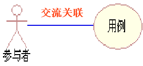
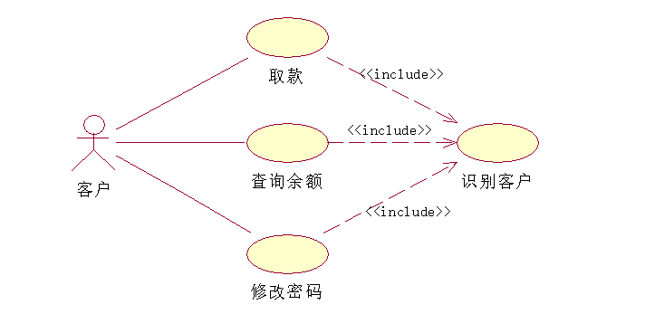
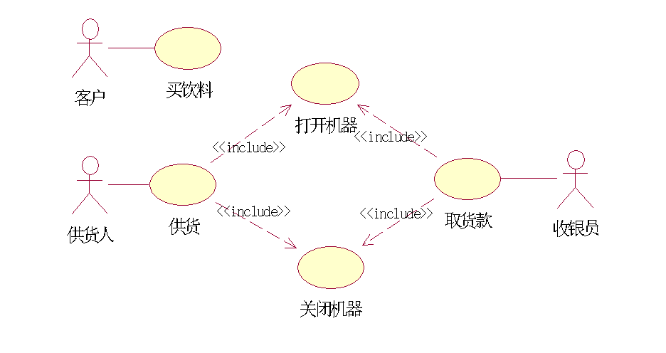
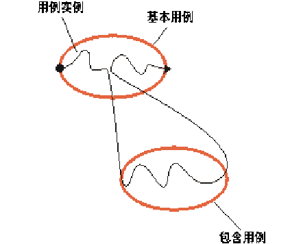
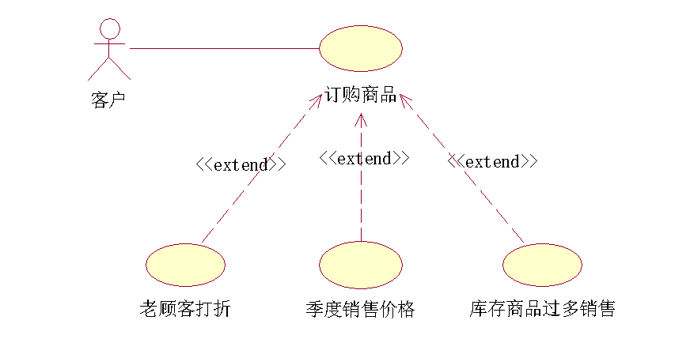
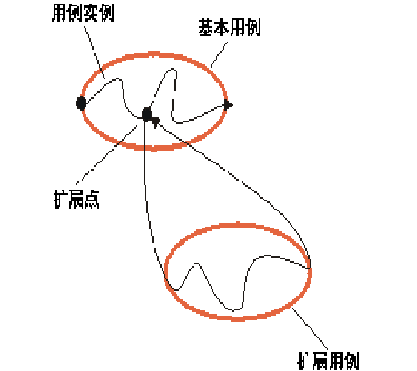
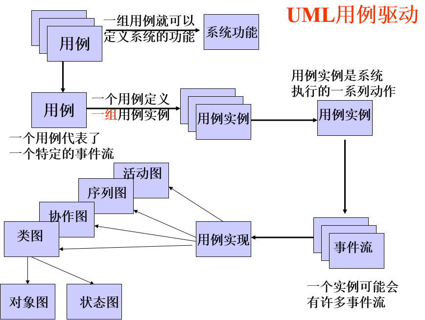

用例是从系统的外部对系统进行黑盒视图描述的一种组织方法。
用例通常作为一种捕获需求和对已知功能需求进行建模的方法而被使用。
用例只是行为需求，外部接口、数据格式、业务规则、计算公式等是用例行为需求的聚集。
定义：系统的参与者与系统交互后,由系统所执行的动作序列（事件流），对特定的操作者产生可以观察到的可度量的有价值的结果值
用例的定义对于我们捕获需求、用例描述、用例粒度分析有直接的帮助
每一个用例代表了一个特定的事件流。
一组用例就可以定义系统的功能。
一个用例是一种规格说明，它规定了动态事物的一种对交互双方有价值的行为。
是系统之外与系统能产生交互作用的某个人或某件事。
软件是由人来使用的，操作者使用用例来完成他的任务，许多任务的集合代表了操作者的职责。

每个主用例至少和一个参与者有关联，称为交流关联。
用例自己永远不会发起行动。
系统是我们的研究对象；参与者与之交互，用例定义了这些交互作用
事件流描述了参与者与系统之间的动作序列，它用自然语言写成，或者用含有精确术语的前后一致的散文写成。
这些术语通常来自于问题域中的术语表。
用例事件流最终要描述所有可能的过程。
用例的事件流从系统的黑盒视角描述了系统的行为，而在设计中的用例实现则是白盒视角。
三种事件流可以将一个用例中的各种状况包括在内
包含关系用于提取共用的用例(通用的功能段)。
包含关系是从基本用例到包含用例(抽象用例)的关系，它指定如何将为包含用例定义的行为明确地插入到为基本用例定义的(指定位置)行为中。
在具备包含关系的两个用例中，包含用例(抽象用例)一般不单独存在。
包含用例总是抽象的。它描述在执行基本用例的用例实例中插入的行为段。
基本用例可控制与包含用例的关系，并可依赖于执行包含用例所得的结果，但基本用例和包含用例都不能访问对方的属性。从这种意义上讲，包含用例是被封装的，它代表可在各种不同基本用例中复用的行为。


由于包含用例是抽象的，因此它不需要有与它相关的主角。只有当包含用例中的行为明确地涉及到与主角的交互时，才需要与主角的通信关联关系。
包含用例的行为插入到基本用例中的一个位置。
当遵循基本用例说明的用例实例到达基本用例中定义了包含关系的位置，它就将改而遵循包含用例的说明。一旦执行完包含用例，用例实例就将在基本用例中它先前停止的地方重新开始。

在不改变原始用例的情况下有条件地扩展已有用例的行为。
扩展关系是从扩展用例到基本用例的关系，它说明为扩展用例定义的行为如何插入到为基本用例定义的行为中
扩展关系的优点:
当一个用例有多个子流程时(可选系统行为)，可以用扩展关系对其进行扩展，使得基本用例的不同子流程能在不同的情形下以扩展用例的形式被激活，通过这种方式，可以把可选行为从必须行为中分离出来
使用扩展关系还可以描述一个只有在给定条件下执行的独立的子流
基本用例可以独立于扩展用例单独存在

扩展用例可以有基本事件流和备选事件流。
用例实例通过扩展到底会采取哪条路径，这不仅取决于在执行扩展前发生的事件，而且还取决于执行扩展时在与主角的交互中发生的事件执行扩展 。
用例执行扩展实例一旦执行了扩展，它就会在基本用例的中断点处继续执行基本用例。

包含关系
扩展关系
